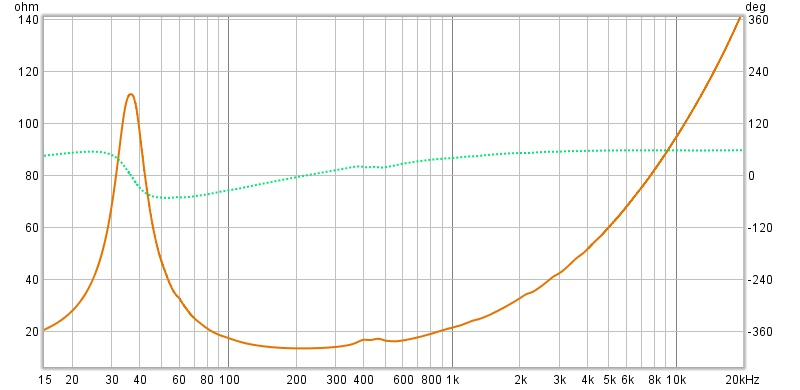
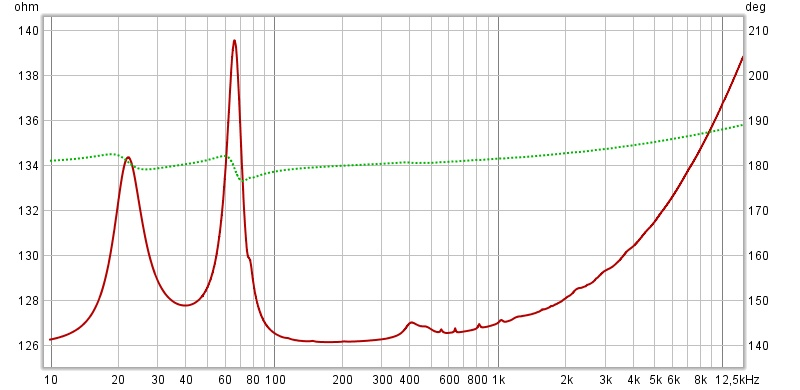
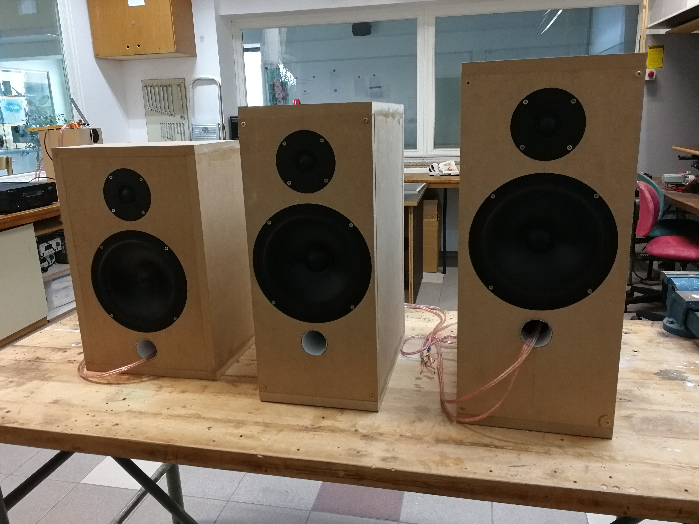
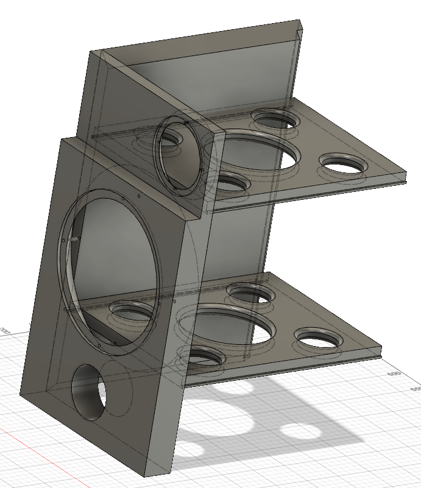
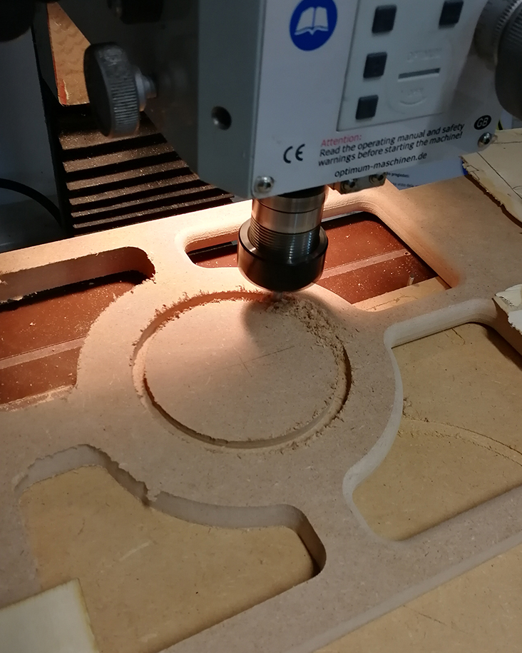
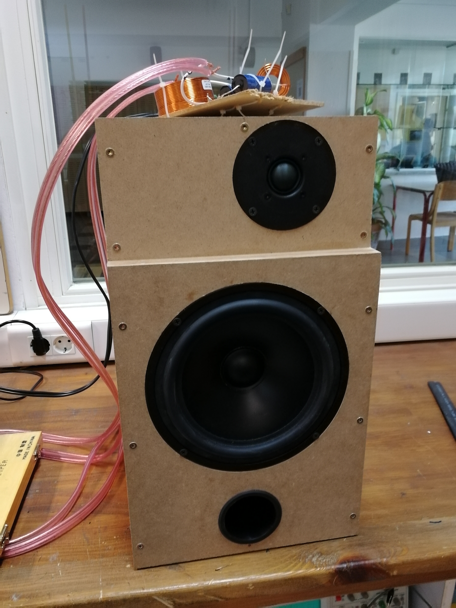
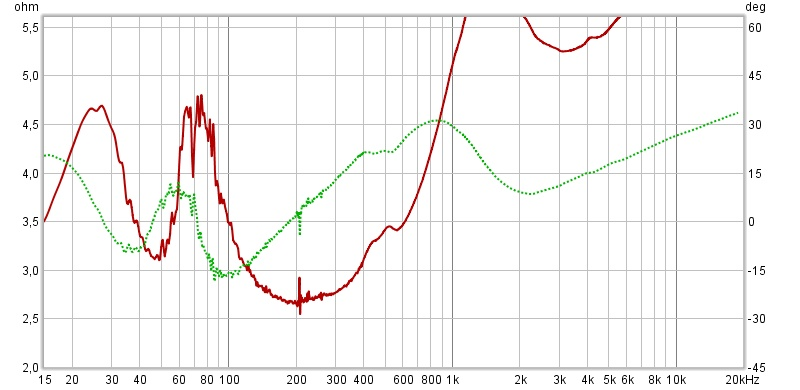

Izvajanje meritev
Ugotovili smo, da za izdelavo zvočnika potrebujemo natančno analizo zvočnikov, ki jih bomo vgradili v škatlo.
Pri tem nam je pomagal dr. Samo Beguš s Fakultete za elektrotehniko Univerze v Ljubljani. Odločili smo se, da
si bomo pomagali s prostodostopnim programom Room EQ Wizard. Podatki, s katerimi opišemo vsak zvočnik, se imenujejo
Thiele-Small parametri oz. TS parametri. Program Room EQ Wizard oz. REW izračuna TS parametre z dvema
meritvama impedance - pri drugi meritvi dodamo na membrano zvočnika znano maso. Program na podlagi razlik med
izmerjenima impedancama neobtežene in obtežene membrane izračuna TS parametre.
Na spletni strani programa (www.roomeqwizard.com/) je jasno opisan postopek meritve
impedance (www.roomeqwizard.com/) in
izračuna TS parametrov (www.roomeqwizard.com/)
Za vse zvočnike, ki smo jih prejeli, smo opravili meritve impedance v gluhi sobi Fakultete za elektrotehniko
UL in tako izračunali TS parametre za vse zvočnike. Rezultati naših meritev so zbrani v tabeli spodaj.


Nato smo izdelali 3 škatle. Več o tem na zavihku Ohišje. Izmerili smo impedance in frekvenčne meritve za zvočnika SEAS P21RE4X/DC in SEAS 27TFFD, tokrat vgrajena v škatle.
Primer meritve impedance za škatlo s prostornino 30 l. Ugotovili smo, da se impedančni vrh "razdeli na dva", kadar je v škatli vgrajen t.i. "bass reflex". Minimum med vrhoma ustreza frekvenci bass reflexa. Več o teoriji na zavihku Teoretične osnove.
Pri frekvenčnih meritvah smo izmerili najprej odziva posameznih zvočnikov (samo nizkotonskega zvočnika in samo visokotonskega zvočnika), nato pa še odziv obeh zvočnikov skupaj. V programu smo kasneje primerjali odziv obeh zvočnikov skupaj z vsoto posameznih odzivov zvočnikov (odzivu nizkotonskega smo računsko prišteli odziv visokotonskega zvočnika). Izkaže se, da se izmerjeni skupni odziv z izračunanim na ujema. Se pa ujema, če nizkotonski zvočnik pomaknemo naprej - virtualni premik smo naredili v programu VituixCad.


To nas je presenetilo, zato smo raziskovali naprej. Ugotovili smo, da obstaja t.i. akustični zamik.

vir: https://en.wikipedia.org/wiki/Loudspeaker_time_alignment
Gre za to, da ni povsem jasno, kje se pri vsakem zvočniku zvok "rodi". Z analizo podatkov smo ugotovili, da je izvor zvoka pri nizkotonskem zvočniku glede na visokotonskega zamaknjen za 24 mm (konkretno za zvočnika P21RE4X/DC in 27TFFD).
Primer meritve impedance

TS parametri
| Podjetje | Model |
|---|---|
| ScanSpeak | R2604/8320000 |
| ScanSpeak | 10F/8414G10 |
| ScanSpeak | 18W/8434G00 |
| ScanSpeak | 22W/8534G00 |
| SEAS | H0978-06 27TFFD |
| SEAS | H0442-08 P21RE4X/DC |
| SEAS | H1291-08 W15CY/TV-NHT |
Nato smo izdelali 3 škatle. Več o tem na zavihku Ohišje. Izmerili smo impedance in frekvenčne meritve za zvočnika SEAS P21RE4X/DC in SEAS 27TFFD, tokrat vgrajena v škatle.
Primer meritve impedance za škatlo s prostornino 30 l. Ugotovili smo, da se impedančni vrh "razdeli na dva", kadar je v škatli vgrajen t.i. "bass reflex". Minimum med vrhoma ustreza frekvenci bass reflexa. Več o teoriji na zavihku Teoretične osnove.

Pri frekvenčnih meritvah smo izmerili najprej odziva posameznih zvočnikov (samo nizkotonskega zvočnika in samo visokotonskega zvočnika), nato pa še odziv obeh zvočnikov skupaj. V programu smo kasneje primerjali odziv obeh zvočnikov skupaj z vsoto posameznih odzivov zvočnikov (odzivu nizkotonskega smo računsko prišteli odziv visokotonskega zvočnika). Izkaže se, da se izmerjeni skupni odziv z izračunanim na ujema. Se pa ujema, če nizkotonski zvočnik pomaknemo naprej - virtualni premik smo naredili v programu VituixCad.
To nas je presenetilo, zato smo raziskovali naprej. Ugotovili smo, da obstaja t.i. akustični zamik.
vir: https://en.wikipedia.org/wiki/Loudspeaker_time_alignment
Gre za to, da ni povsem jasno, kje se pri vsakem zvočniku zvok "rodi". Z analizo podatkov smo ugotovili, da je izvor zvoka pri nizkotonskem zvočniku glede na visokotonskega zamaknjen za 24 mm (konkretno za zvočnika P21RE4X/DC in 27TFFD).
Izdelava ohišja
Na podlagi pridobljenih TS parametrov smo določili primerno prostornino zvočnika/škatle. Za ta korak smo uporabili prostodostopen program WinISD. Program izračuna prostornino, pri kateri bi bil frekvenčni odziv škatle pri vseh frekvencah čimbolj podoben.
Ker imamo nekaterih zvočnikov več kot drugih, smo se odločili, da najprej poskusimo z izdelavo dvosistemskega zvočnika z uporabo nizkotonskega zvočnika P21RE4X/DC in visokotonskega zvočnika 27TFFD. Program WinISD je za zvočnik P21RE4X/DC predlagal prostornino približno 50 litrov pri frekvenci "bass reflexa" približno 36 Hz. V praksi se ne moremo zanašati izključno na izračune - v izračunih npr. ni upoštevana " hitrost odziva nizkotonskega zvočnika" Pri tako velikih prostorninah se lahko zgodi, da bass zvočnik ni dovolj odziven. Pri npr. hitrem tempu glasbe ne zmore slediti, rezultat pa je "razmazan zvok", pri katerem ne ločimo posameznih not med seboj (npr. hiter tempo bas kitare).
Zato smo se odločili, da poskusimo z izdelavo treh zvočnikov z različnimi prostorninami in sicer 20 litrov, 30 litrov in 40 litrov. Za te prostorine se izračunani frekvenčni odzivi še vedno precej "lepi"


Izdelali smo 3 škatle in poslušali samo nizkotonske zvočnike, brez kretnice. Zvok je iz vseh treh zvočnikov nenavaden, saj manjkajo vse visoke frekvence, nizkotonski zvočnik ne zmore predvajati vseh frekvenc. Ker pa od zvočnika zahtevamo preveč, nenavadno zvenijo celo nizke frekvence.

Nato smo ponovno izvedli meritve impedance in frekvenčne meritve v gluhi sobi Fakultete za elektrotehniko, tokrat za vse tri škatle in potrdili smo naša pričakovanja - večja prostorina, več nizkih frekvenc dobimo. Poleg tega pa smo ugotovili še, kako škatla s cevjo vpliva na impedanco zvočnika. Ugotovimo lahko, da se vrh impedance razdeli med dva nova vrhova. Minimum med novima dvema vrhovoma ustreza frekvenci "bass reflexa". Več o tem na zavihku Meritve.
Nato smo se odločili, da meritve ponovimo še enkrat, tokrat z uporabo dveh tuljav na zvočniku P21RE4X/DC. Oznaka DC namreč pomeni, da ima zvočnik dve tuljavi, lahko uporabljamo samo eno, lahko pa dve, vezani bodisi zaporedno bodisi vzporedno, kar se pozna pri impedanci.
Na podlagi meritev smo se odločili, da pripravimo nov prototip škatle, ki bo upošteval t.i. akustični zamik. Izmerili smo, da bi moral biti nizkotonski zvočnik premaknjen naprej za 24 mm glede na visokotonski zvočnik. Odločili smo se za stopničasto sprednjo ploščo, saj je tako najlažje nizkotonski zvočnik premakniti naprej. Narisali smo 3D model novega zvočnika - dobili smo nekaj novih dizajnov, ki jih bomo preizkusili. Poleg tega smo se odločili, da bomo nov zvočnik izdelali malce drugače, zato smo s šolskim 3D tiskalnikom zdelali kotnike izključno za lažjo sestavo novega zvočnika, notranje ojačitve pa smo izdelali s šolskim CNC rezkarjem.


Prototip 2 je izdelan.
Novi prototip ima stopničasto sprednjo ploščo, ki omogoča boljši fazni odziv.

V šolski delavnici smo pomerili impedančni odziv. Pri prejšnjih meritvah smo se naučili, da bass reflex cev impedančni vrh razdeli na dva, minimum ustreza frekvenci bass reflex cevi. Novi prototip smo tako "uglasili" na frekvenco, pri kateri sta oba vrha simetrična. Rdeča krivulja prikazuje impedanco (leva os), zelena pa fazni zamik (desna os).
Meritev je precej slaba (šum), saj so pogoje za meritev v delavnici slabi. Meritve bomo ponovili v gluhi sobi Fakultete za elektrotehniko Univerze v Ljubljani.
